速览
检查声音时，他一定会在多个环境里对比试听：首先是耳机，其次是电脑上的音箱，然后这点很重要——廉价的电视显示器。尤其电视自带的喇叭，小的话低音几乎全没了，常常缺乏魄力；但另一方面，这是最普及、最多人在听的事实。在录音室等隔音很好、喇叭很好的地方细调也是必要的，但若执着于在那里听起来细腻的声音，民用喇叭可能完全听不好。准备不同环境、在各环境下都没问题，也许很麻烦，但必要。这和细腻精致的声音制作稍有距离，有微妙之处，但还是贴近顾客的环境很重要。顺便，用这种调整方法后，换耳机很困扰：基准一变，就和以往的检查对不上。另外 Switch 本体的喇叭也应考虑，但不太重视：Switch 喇叭相当清晰，而掌机模式时也不少人把音量调到最低。做得太过会离印象太远，但声音要以适度的平衡、在多个环境中确认；尤其建议不要只用录音室的大喇叭收尾。题外话：《大乱斗》中最难做的音大概是隆的命中音——看似模仿当年就好，但包括当年街机音从喇叭响起的氛围在内，进行了非常细致的反复试错。
1. 多个环境对比 0:03
- 耳机。
- 电脑上的音箱。
- 以及很重要的：廉价电视显示器。
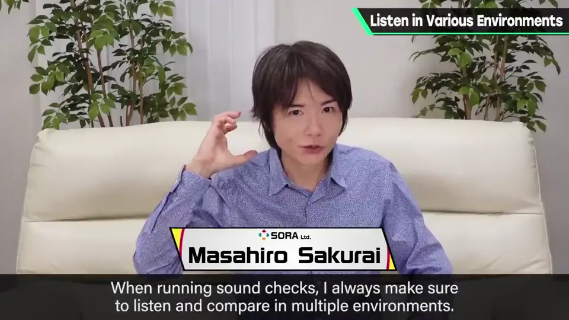
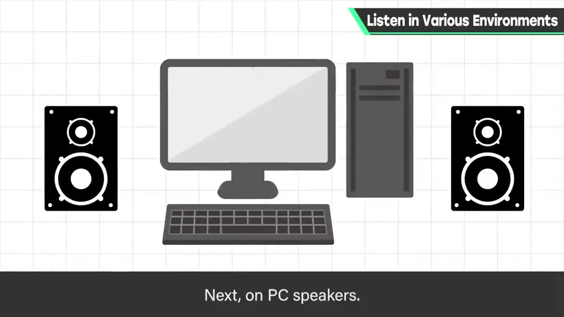
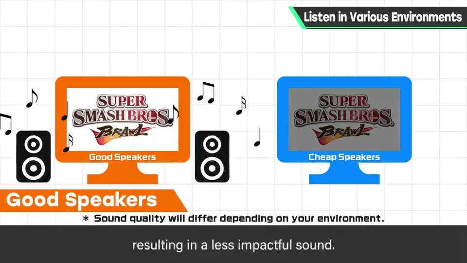
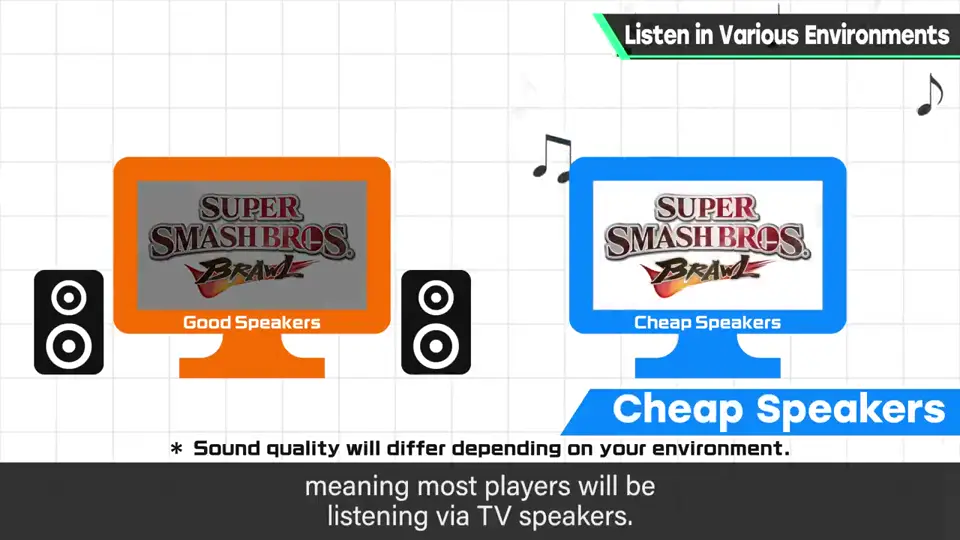
尤其电视自带的喇叭，小的话低音几乎全没了，常常缺乏魄力。但另一方面，这是最普及、最多人在听的事实。
2. 录音室的陷阱 0:37
在隔音很好、喇叭很好的录音室细调也是必要的。
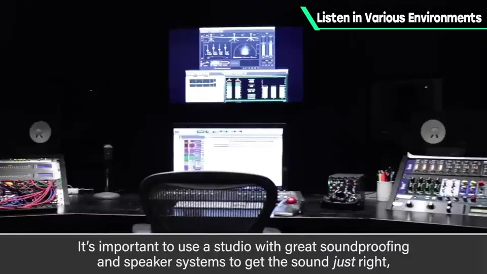
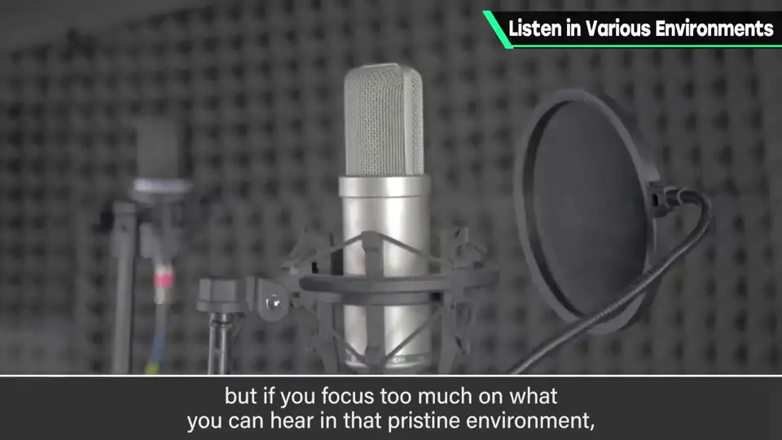
准备不同环境、在各环境下都没问题，也许很麻烦，但必要。这和细腻精致的声音制作稍有距离，但还是贴近顾客的环境很重要。
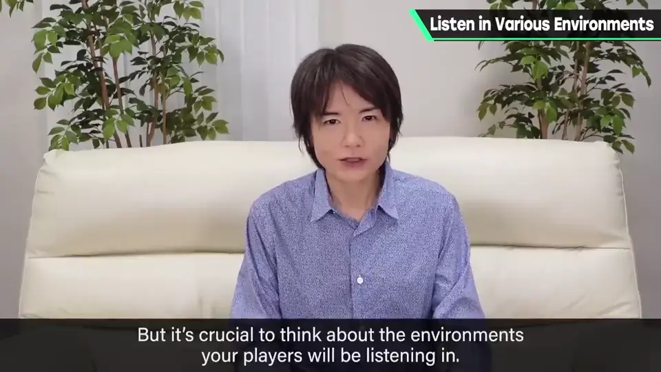
3. 难换耳机 1:17
用这种调整方法后，换耳机很困扰：基准一变，就和以往的检查对不上。
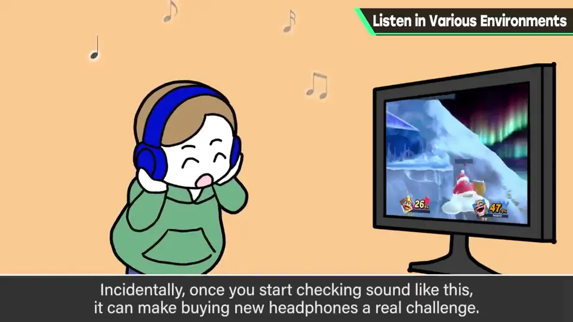
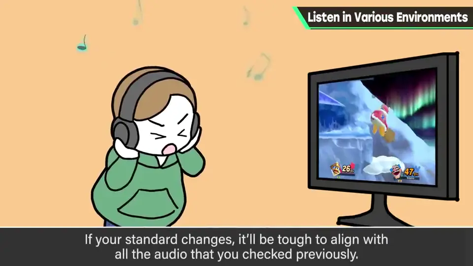
4. Switch 喇叭 1:24
Switch 本体的喇叭也应考虑，但不太重视：它相当清晰；而掌机模式时也不少人把音量调到最低。
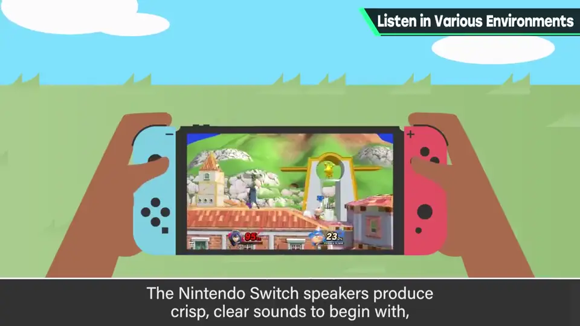
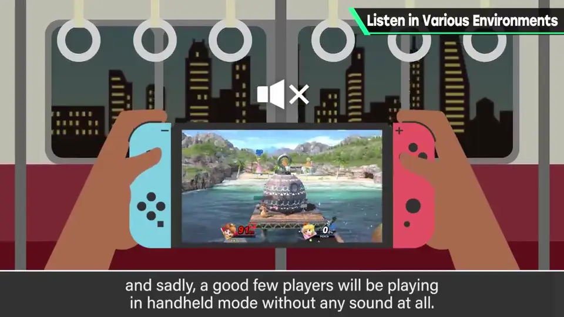
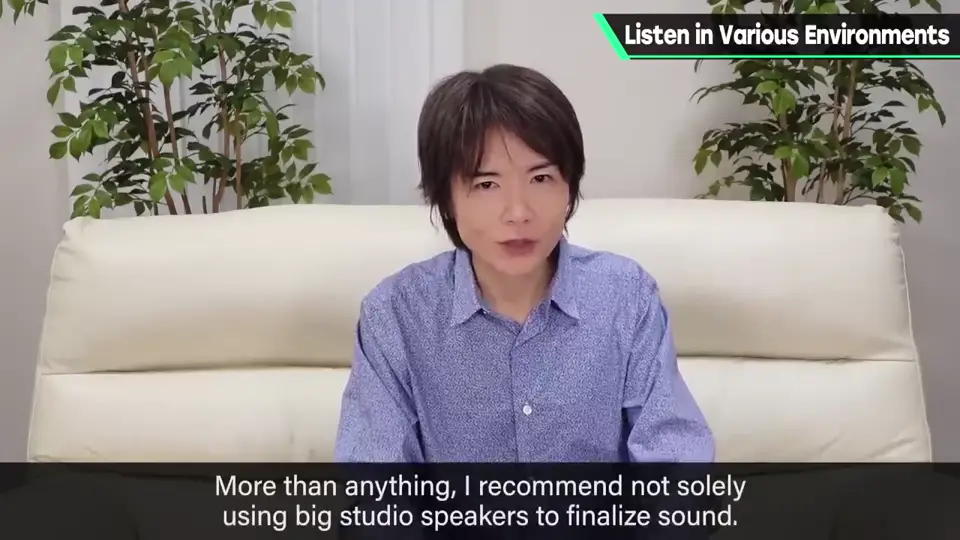
5. 题外：隆的命中音 2:06
《大乱斗》中最难做的音，大概是隆的命中音。
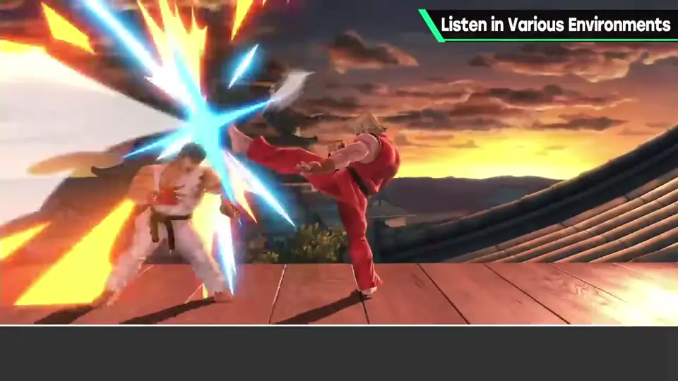
看似模仿当年就好，但包括当年街机音从喇叭响起的氛围在内，进行了非常细致的反复试错。
自测题
1. 樱井检查声音的三个环境是什么？
耳机、电脑音箱、廉价电视。 0:10
2. 为什么廉价电视特别重要？
低音几乎没有，但它最普及、最多人用。 0:30
3. 为什么不能只用录音室大喇叭收尾？
在那里细腻的声音，在民用喇叭上可能完全听不好。 0:50